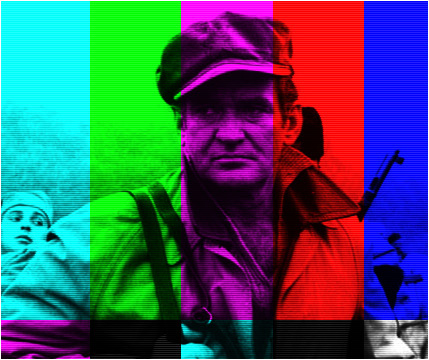
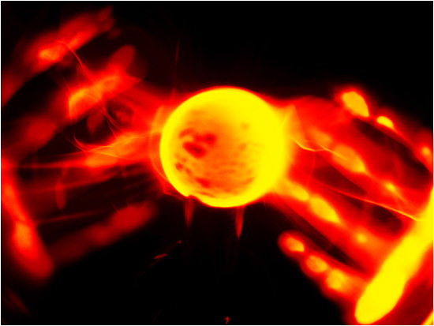
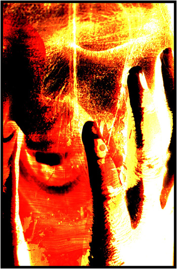
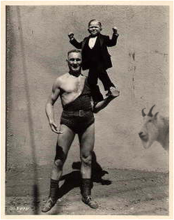

| |
 |
 |
| |
 |
Ден 6 |
|
| |
|
|
Ален Корбин, детектив:
Голем дел од претходно одврзаните нишки во говорот на јарците конечно се врзуваат, а се отвара и низа нови прашања околу природата на Допелгангер. Мудрите Јарци се осврнуваат на Партизанот и неговата „тајна“, што теоретски му дава и на Партизанот мотив за некаква одмазда кон јарците. Исто така, овој говор може да биде крстен и „анти-воен“ со оглед на неговата тематика, иако некои локални интелектуалци сметаат дека токму напротив, јарците всушност изнеле серија про-воени аргументи. Интересно е што заради проблеми со здравјето на Кловнот, Џуџето (во костум на Умпа Лумпа) ја најавува точката на јарците. Исто така, се чини дека на јарците веќе не им е потребна медовина за нивната точка, па Џуџето мора со сила да ги прекине и тоа на задоволство на сите циркузанти...
ЏУЏЕТО: Лами и лососи, умпа ви лумпа! Се извињавам у старт што ви шиткаме една вака нетачна тачка, ама не ја пишувам ја програмата, пљус има и бетер. Ви ги давам, Шутрите Јарци! (смеа, шепот и ракоплескање)
ДЕСНИОТ ЈАРЕЦ: ...Шутрите? Да, па мора да сме, така замрзнати со очите во небо од ѕвезди што паѓаат... (воздишки, аплауз) Сабајлево сонував дека се наоѓам сред град полн овци со врескачи и дека сите кој како ќе помине само ме штипат и удираат, обликувајќи ме во што ќе посакаат.
ЛЕВИОТ ЈАРЕЦ: Џуџето се прави важно денес, пораснало преку ноќ. (аплауз) Донеси му обичен кротител на лавови од некој друг циркус и тоа веднаш ќе си залепи усни со суперлепак... (смеа во публиката)
Д.Ј.: Без разлика... Врти, сучи, додека да ги разоткриеме маските на Допелгангер, секој циркузант со малку самопочит ќе навре барем уште 5-6 нови лица што мора одново да се разбиваат. Не ни треба воопшто медовина за да зборуваме, а еве тука чекаме Камшикарот да ни донесе по две чашки ко да сме бледолики шимпанза во зоолошка... (шепот во публиката: Не разбирам ништо што зборуваат...)
Л.Ј.: За некои нешта во оваа вселена треба време, тоа е се. Денес бевме кај Гатачката и слушнавме што имаа нејзините „богови“ да кажат за се: за циркусот, за Самовилата, за Камшикарот... Сега ако ми кажеш дека има нешто нејасно околу циркусов, заслужуваш Света Граната некаде во твојот кармички континуум... (смеа во публиката)
Д.Ј.: Ух, да, ама Партизанот, тој вечно насмеан голтач на турско кафе и слатко, се уште шета слободно со зацокулен полет во одот. Пред пола саат правеше муабет со Децата од Гума и на пауза меѓу две реченици, намигна шлајм во моја насока – мислев уште тогаш и таму да го набодам на рогови. Се додека нему му се клања се живо и диво во циркусов, со колена во кал или бисери, сеедно, ние ќе бидеме само запирки во историјата на ова патувачко чудовиште, виснати како трофеи од ѕидот на Партизанот, со усните расштракани во Крелм насмевка иста како неговата.
Л.Ј.: Како што кажав, има време за некои нешта, и полека, како што отчукуваат чук-чук стрелките на стотината часовници околу нас, моментот се наближува... Со олку злоба насобрана во црвените завеси на овој шатор (си ги приметил зиг-заг шарите што висат од некои ѕидови, речиси како грабливи заби?) и зелените џумки на она Џуџе (сега прикриени под тешката Умпа Лумпа пудра), јарец мора да биде внимателен...
Д.Ј.: (пауза, вдишува, шепот во публиката) Мхм-блее... Добро... Ако некој во публиката добие впечаток дека во циркусов нема ништо вредно за внимание или за некакво духовно „поење“, тогаш се извинувам, не е баш така... Во Допелгангер, секој ден што почнува со прекршено смотаната мелодија на карневалска армоника знае да биде возбудлив. Кловнот си свири во својата приколка, работниците полека ги туркаат ’рѓосаните колички напред, а сонот од претходната вечер конечно се распрснува во купче меури што одлебдуваат таму некаде. Но, има и ветровити денови како денес, кога ветер одгризува по некое парче од купиштето лаги. Така, ова утро армониката на Кловнот беше целосно раштимана, работниците зборуваа со наведнати веѓи за настаните од претходните два дена, а сонот не сакаше да си оди, оти наводно, воопшто и не беше сон, туку претскажување на голата вистина... (се слуша: Владче, дај земи уште семки...)
Л.Ј.: ...Самовилата еднаш ми трепна приказна од Четвртата Циркуска војна. Тогаш мислев дека како и секоја приказна од патиштата низ Европа, би требало само да те заплаши, да те истресе од кожинката за неколку минути... ама се повеќе мислам дека тоа било предвидување... Можеби дружбата со Гатачката се одразила некако врз неа...
Д.Ј.: ...и обратно... Како одеше приказната?
Л.Ј.: Вака некако: значи фронт за време на војната, којзнае кога и којзнае каде... Два правливи тенка, целите облеани во крв и шрапнел, се сретнале една вечер сред опустошеното бојно поле. Едниот бил црн, а другиот бел. Веќе немале никакви гранати, ниту куршуми, инаку веднаш би се разнеле меѓу себе. Во прво време не знаеле што да прават, па застанале еден спроти друг и се гледале саат-два-три...
Д.Ј.: Можеби собирале плуканица за барем добро да се исплукаат... (смешкање)
Л.Ј.: ...а можеби и бесцелно се пребројувале колку гориво имаат во резервоарите, веројатно ич. Како и да е, времето минувало бавно, мртвите тела и возила наоколу продолжувале да чадат црно кон сонцето и месечината, по некој мршојадец ќе поминел ниско над лешевите, а некаде во далечина се слушало и ехо од вчерашните експлозии: плачот на ранетите, гордоста на победниците...
Д.Ј.: „Војната е како љубов, стално си наоѓа начин,“ рекол Брехт...
Л.Ј.: Наеднаш почнал да се топи материјалот од кој двата тенка биле направени. Прво страдале цевките на белиот тенк, ама веднаш потоа и нешто погрубите пукала на црниот тенк – се искривиле како свеќи во црква и истекле надолу во вирче од вжештена маса. Потоа се стопиле гасениците, вкопувајќи ги тенковите во место и оневозможувајќи било каков обид за движење и евентуално (екстремно шпекулативно) бегство. На крај и самите кабини се раскашавиле и растечниле, навивајќи се над главите на војниците, давејќи го екипажот во некој вид на вечен метален гроб. Платените војници воопшто и не покажале обид да се спасат, туку втренчено гледале во противничкиот тенк, дури и кога зажежениот метал почнал да ја нагризува нивната кожа, а нешто потоа и самите очни јаболкца... Жешко, остро, бавно... Шлуп-шлуп-шлуп...
Д.Ј.: Трегери во душа до крај...
Л.Ј.: Никој ни писнал ни вреснал... После неколку часа интензивно топење под празното небо, од двата тенка останале само две црвенкасти локви мастило. Најхрабриот мршојадец во тие краишта со горчина во здивот опцул од горе, „Да ти *бам тенковите што се топат од чиста омраза.“ (шум во публиката)
Д.Ј.: Сликичка за машна на Кловнот... „Како ви се допаѓа? Огорчен мршојадец со војничко копито во клунот; Расипаната Судијка ја соши за мене, влакната се од нејзината сопствена брада!“ (непријатна смеа)
Л.Ј.: На крајот ветрот и таму ќе дувне, ќе одвее се освен срамното чувство на голем бош...
Д.Ј.: Само, ветрот не е идеален заштитник на вистината. Кога единствена вистина е самата лага, ветрот не може ништо освен да крене раменици. Ако закопаш кола во некој ендек и го превземеш идентитетот на човекот што останал во неа, речиси сигурно ќе се извлечеш. Луѓе на почетокот ќе бидат збунети околу промената на некои твои црти, околу забалото во твојата вилица, ама ете, личната карта и петокраката на неа се тие, здравствената книшка иста ко и вчера, а преку време, како што луѓето се навикнувааат на тебе и твоето пријателство, на твојата канцерогена харизма, ќе заборават на било каков сомнеж. Единствен доказ против тебе би можел да биде ендекот и она што се наоѓа во него, ама ако си доволно мудар, ќе знаеш да ја асфалтираш тазе превртената земја, да ја направиш дел од некој локален пат, така што никој ни за милион години да не може да го најде точното место на злосторството...
Л.Ј.: Се што треба за таков акт е два-три пријателски збора со жртвата, чисто за привид на длабока доверба; ѓаволска упорност за да се начека вистинскиот момент на вистинското место (пат под конструкција сред празна пустиња и барем еден кран за да се ископа и закопа ендекот); и нешто способност за глума како би можело да се одржи лелеавиот вез на веродостојност во раниот период по правливото убиство... (се слуша: Ова ко еден расказ што го имам...)
Д.Ј.: Ние познаваме еден таков глумец; го викаме Партизанот и тој по многу што потсетува на еден друг голем филмски партизан од онаа големоскроена балканска држава пред милијарда години; иста насмевка, иста исправена става, медали по градите, гордост во говорот, благост во движењето... Но, секако, неговиот лик е лаж-лаж: ЛАЖЕН, ко Гигер на љубовна парада, ко мед од црна бубашваба, дами и господа, ко бебешка брада! (се слушаат водишки меѓу циркузантите: Глупости! ЛАГИ! Џуџе, џачепи ги, подитно!) Вистинскиот Партизан лежи во ендекот, застрелан во чело и соголен до коска! (продолжува галама кај циркузантите: Џуџе БЕ; смеа во публиката )
|
|  |
Л.Ј.: (со повишен тон) Некогаш се прашувам како тоа другите луѓе остануваат слепи пред предавството на насмеаниот господин, пред неговиот кукавичлук, но штом видам негов говор, се ми станува јасно. Партизанот, горд и светнат пред циркуската маса, ќе се качи на пиедестал одвреме-навреме, ќе го потчукне микрофонот и ќе грмне, „Без постојана будност и народна решеност, нема гаранција за зачувување на она што е веќе постигнато!“ Циркузантите ќе прснат во веселба, ќе ги фрлат своите шарени шапки, перики, празни пенкала и непрочитани книги во вис и ќе почнат да скандираат, „Пар-ти-за-нот! Пар-ти-за-нот!“ (шепот во публиката)
Д.Ј.: Децата од Гума секако ги фрлаат своите пердуви и хартиени бротчиња највисоко (бротчињата се скинати од некој дневнополитички магазин со голи тетки на трета страна). „За едно дете нема ништо поприфатливо од страната што победува,“ како што запишал еднаш месје Балард. Само зборови, светнати и зашеќерени, кренати високо-високо над циркусот, за сите да им се восхитуваат на нивната убавина додека тие одлебдуваат како меури се додека не прснат во ветрот. А чевелот, цокулата, папучата, патиката, штиклата и чизмата заковани длабоко во место кога треба да ораат напред низ ѕид и камен...
Л.Ј.: Тука некаде лежи и одговорот на едно мое друго, постаро прашање... Ако милион луѓе почнат да маршираат кон една цел, кој ќе ги запре? Никој. Зошто тогаш не маршираат? (се слуша: Ќе привршуваат блуфонциве?)
Д.Ј.: Еднаш додека Партизанот и Мечката си муабетеа потсетувајќи се на старите добри денови, до нив пријде Самовилата. Таа трепна прашално, „Како си помина во Солун?“ Насмевката за момент се изгуби од лицето на Партизанот, и тој изусти, „Никогаш не сум бил во таа циганска земја.“ Самовилата се збуни, „Абе ајде, си поминавме супер во Грција пред десетина години, тоа беше прекрасна, зелена пролет, полна со мириси и пеперуги. Си игравме камај низ преполните улици.“ „Слушајте кога ви кажувам, госпоѓице, јас никогаш не сум стапнал во тој пекол. Вие сигурно бладате, бидејќи убав збор за нив не може да биде ништо добро, се разбираме?“ Самовилата се повлече пред црниот метално инсектовиден сјај во очите на нејзиниот соговорник, „Вие не сте Партизанот што го познавам.“ При самата сугестија дека нешто не е во ред со нивниот омилен херој, Децата од Гума престанаа да цртаат ташаци врз муцките на заспаните тигри и се стрчаа кон Самовилата. „Ти си агент!“ и свикаа. „Признај! Признај!“ Во нивните очи Самовилата го препозна истиот инсектовиден сјај и уште пред тие да стигнат до неа, таа се вивна високо нагоре и полета назад кон нејзиниот шатор. Таа вечер не и се играше шах. (се слуша од страна пригушено мутиран глас: Јарци-говедарци, не за џабе немате палци!)
Л.Ј.: Секако, тешко дека некој ќе им верува на нашите зборови – како може пар јарци што мирисаат на жртвени јагниња да се споредат со титанската големина на еден Партизан? Вчера, на поминување низ циркусот, Партизанот го смири стравот на циркузантите од гневот на Допелгангер и за момент сите заборавија на страшното предвидување на Гатачката. „Допелгангер е гола вода. Да знаете со какви се отпадоци на човечкиот род морав да се справам во текот на мојот живот. Се сеќавам, беше тоа 1943, пишувавме поезија во еден бункер кога кон нас се нафрлија два тенка, пукајќи на слепо и убивајќи ги сите освен мене. Ах, какви времиња беа тоа. Ако јас можев сам да се справам со едни такви метални грдосии, сигурен сум дека нема да имате ама баш никакви проблеми со вашето чудовиште.“
Д.Ј.: Веднаш по тој говор на Партизанот, циркусот почна да ечи со некои чудни дисторзирани гласови. Ќе се исфрлат пред вас Двоглавиот Јаким и Децата од Гума и ќе почнат да филозофираат без да ги разбираат своите зборови, „Мирот не е отсуство на судир, туку доблест што се раѓа од сила на духот,“ а нивните гласови ќе сменат неколку бои и скали, заблажувајќи ви ги ушите една секунда, корнејќи ви ги пола такт подоцна. (непријатна смеа, се слуша: Владче, дај донеси и пуканки...)
Л.Ј.: И Кловнот го примети ова, па пред денешното шоу, закашлан им кажа на циркузантите: „Што и да правите вечерва, не отварајте усти – сошијте си ги ако треба. Оној шушмулест Партизан не пази како користи зборови па ви ги начукува душичките со глаголски амфетамини. Тоа секако е многу лошо, особено ако амфетамините се купени со позајмени пари како што е во случајов.“
Д.Ј.: Колку и да беа „душевно полни“ охрабрувањата на Партизанот, денес сето тоа одвеа, а муабетите за предвидувањето само засилија. По сите пресметки на семејните преселби и генетски раздвижувања низ различните територии по светов, Шефот на ноќната полиција и Камшикарот официјално потврдија дека немаат никакво крвно сродство т.е. дека се навистина огледалци. Сега прашањето е кој од нив е „лошиот“, тој што сака да го заземе местото на другиот? Според Гатачката, тоа е само наједноставното од еден куп прашања што стојат исправени како нордијски џинови пред нас...
|
|  |
Л.Ј.: Веќе спомнав дека денес ја посетивме во нејзиното дувло и дека таа одговори на многу прашања, сакани и несакани. Таму некаде околу пладне, таман што се откри дека Кловнот е болен и дека секој може да прави горе-долу што сака – Децата од Гума веднаш баталија вежби за да фрлаат зарови, Мечката само ја смени позицијата во кафезот и тушна – до нашето легло се довлечка црна мачка со пиратски превез на десното око на кој пишуваше „Сабрина“... (смешкање во публиката)
Д.Ј.: Мачката мјаукна два пати, се поткашла и проц’цка нежно, „Фино е да се лежи така во сено ко утоп мокра чорапа кога некој ве чека со денови и денови... Ви дава на значење, нели? Ајде станувајте полека и ела по мене...“ За миг на нејзиното лице се отцртаа брчките на Гатачката по што таа се сврте со високо кренат опаш и тргна бавно кон својот дом. И нема што тука: ја следевме...
Л.Ј.: Се собравме на купче во кабината на Гатачката: бабичка, две рогати животинки и дузина перничиња што предат. На масичката меѓу нас, час белата, час рибизната, час маслинестата кугла... со едно нејасно лице исцртано во неа што гледаше прашално кон нас. „Да, сине на мама, тоа се тие, конечно дојдоа,“ шепна Гатачката со мекост каква ни за 100 години не би очекувале во неа. Во воздухот плесна млакост на непознати опојни (и можеби отровни?) мириси (дали вака ги собираа жртвените јагниња пред да ги скршат со чекан?), но пред да прашаме било што, лицето од куглата пресече, „Ајде мамо Гаталко, доста везење, гатај! Кажи им на јарињава што е бељата на Допелгангер и како таа може да се разврзе во килибар?“ Тогаш, куглата светна и во неа го видовме Допелгангер во цела негова слава...
Д.Ј.: Само нешто не беше баш во ред со таа слика... Околу шаторот, појавите што отпрвин личеа на нашите познаници циркузанти беа некако – отштрафени, изопачени... Како што мирисот во воздухот околу нас засили до прекрешено крешендо, маглата на нејаснотија околу тие сенки во куглата почна да се раскрева. Тоа не беа циркузантите, туку тие: нивните огледалци, сите по ред! Мечката, Каубоецот, Брус Ли, Џуџето, Децата од Гума, Гризелда, Големите воздушни акробати на Кахун, обичните механичари, сите по ред, па и самиот Кловн: исти, а видно различни, во нивниот израз, во нивниот став, во нивната аура и во нивниот шарм...
Л.Ј.: Каубоецот и Брус Ли како бизнисмени на спротиставени краеви од преговарачката маса, Камшикарот во полицајска униформа, Децата од Гума... (се слуша: Абе Џуџе, не требаше досега јарците да завршат?)
Д.Ј.: ...Гатачката ја намурти мекоста во свирепа карпеста уста, „А-а-ако никој ништо не превземе, ликовите што сега ги гледате во куглата, набрзо ќе ги видите во крв и месо, гради против гради со вашите пријатели циркузанти... А, така почнуваат војни... Секој против сам себе... Е-е-ех, јарци, јарци... Требаше да дојдете порано; боговите ми кажаа се за вас, само уште да ми кажеа дека не сте доволно паметни да знаете кому да се обратите... Туку шуш! Доста време е веќе изгубено... Веќе знаете и самите, само можеби тоа не ви е јасно – зад сета подвоеност на Допелгангер, зад сево ова што го гледате во куглата, длабоко, длабоко под нас, се крие Самовилата... Како што постојат места каде што човек може да се жртвува привремено за туѓата среќа (за такво едно место зборувавте пред два дена, јарци мои), постојат и ним спротиставени места каде човек со своето присуство откинува и впива од туѓата среќа. Самовилата е парализирана на токму едно такво несреќно место. Како тоа баш во Допелгангер се крие едно од леглата на човечкиот баксуз не ми е дозволено да ви кажам – ќе звучи премногу како идеја ископана од петпарачко хорорче! Хи-хи – ама секако мора да знаете дека срцето на Самовилата не може да се справи со таков космички негативитет...“
Л.Ј.: Лицето на куглата се појави повторно, со широка арлекинска насмевка...
Д.Ј.: Гатачката продолжи, „Но, Самовилата секако не е крива за ништо... И самите знаете – таа прва го разобличи оној мутант што другите го ословуваат како Партизан – тоа не е кривица... Прашајте ги Децата од Гума и нивното десно рачиште, онаа сурова безлична жена што може да си ја менува формата, како Самовилата има стигнато таму... (се слуша од страна: Глупости! Лаги!) каков подмолен трик бил неопходен за сонцето на Допелгангер да се отвори и да ја проголта Самовилата... Во секој случај... Се додека е таа таму во тоа чистилиште на несреќата, се поблиску и поблиску ќе доаѓаат двата света – тој на циркусот и тој на неговата рефлексија – може ли некој да си ја замисли катастрофата што ќе се изроди од сето тоа?“
|
|  |
Л.Ј.: Тука некаде, пред очи ми се врати сликата на белиот тунел со два жолти излези и џез музичарот во средина, сиот облечен во сино...
Д.Ј.: „Единствен начин да се сопре целиот процес,“ продолжи Гатачката, „и да се избегне судир е да се принесе жртва, како што веќе кажав пред некој ден... Она што не кажав е дека ’жртвата’ ќе мора да биде доволно силна да ја извади Самовилата од нејзиниот грч, тоа ќе биде задачата на таа овчичка со врескач на јазикот...“
Л.Ј.: ...сликата на тунелот не траеше долго... Веќе знаевме дека мора да се мине низ него за да се стигне до Самовилата, па не ни беше толку интересен... Побитното прашање, како да се стигне до него, остана неодговорено, затоа што тогаш сликата се смени во нешто многу поиспревртено...
Д.Ј.: Гатачката продолжи, „Не верувам, брате, дека има некој доволно мудар и силен во циркусот за еден таков херојски чин; кој и да го пуштиме напред како спасител само ќе заглави на истото место и ќе го умножи проблемот, создавајќи потреба за други жртви кои исто така нема да успеваат и се така додека од Допелгангер не остане само шаторот...“ Лицето на куглата повторно пламна... (се слуша гласот на Џуџето: У ред, доволно е!)
Л.Ј.: ...Сликата сега беше бојно поле сред кое два тенка, еден црн, еден бел, стоеја еден спроти друг, и не знам кој беше лев, а кој десен, ама знам дека јас бев во едниот од нив, а ти, јарецу мој мил, во другиот... (почнува галама, белешка од Ален Корбин: на сцената излегуваат повеќе циркузанти)
Д.Ј.: ...и додека Гатачката земаше здив за нов залет објаснувања, забележав нешто... Меѓу сите тие огледалци, немаше ниеден јарец... „А каде сме тука ние?“ прашав на глас... (белешка од Ален Корбин: Џуџето ги повлекува Мудрите Јарци надвор од сцената...) Тог-гаш Г-гатачката се насмеа... „За се има причина, драги мои...“ (...Џуџето става дланка врз муцката на Десниот Јарец)
|
|  |
| |
|
|